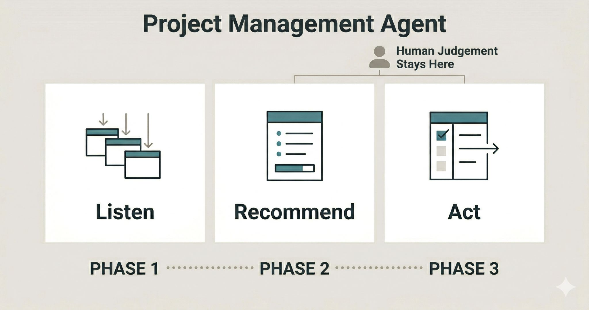

The AI job displacement conversation assumes there's a job to displace. For a lot of small organisations, there isn't.
The role was never going to be filled. The budget wasn't there. The function just didn't happen.

I'm working with a small organisation that needs a product manager. They can't afford to hire one. So I'm trying to build an agent that does part of the job.
Without a PM function, what tends to happen is that decisions default to whoever has the strongest opinion in a standup. The customer data exists. The analytics exist. Nobody has time to synthesise them. So the roadmap gets set by instinct and squeaky wheels.
The agent I'm building starts with the analytical layer: pulling in product analytics, web and behaviour data, user feedback, and support tickets, then surfacing patterns on a weekly cadence. That's phase one. If it works, phase two is roadmap recommendations, each one linked to a specific metric and rated by confidence level so the team knows how much weight to give it. Phase three, further out, is pushing prioritised items into the developer backlog directly.
The human judgment layer stays human throughout. The agent handles synthesis. The team handles decisions. The gap today is that the synthesis barely exists, which means the judgment layer is making calls without adequate input.
I don't know yet whether this works at the scale I need it to. I'll share what I find.
The broader question it raises: which roles in a resource-constrained organisation are going unfilled right now, quietly, and could be partially covered by an agent before there's ever a budget to hire? Product manager is one. I'd guess there are others.
What would be on your list?